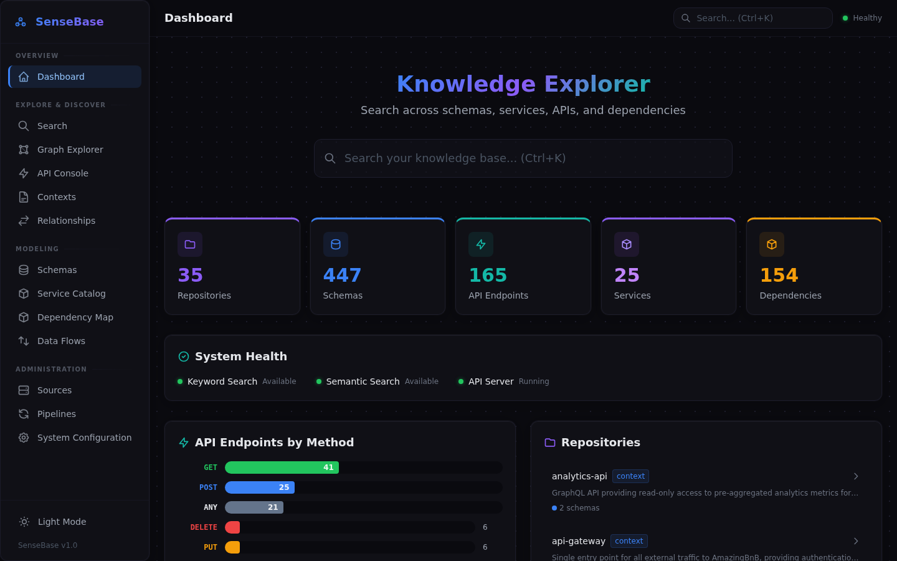
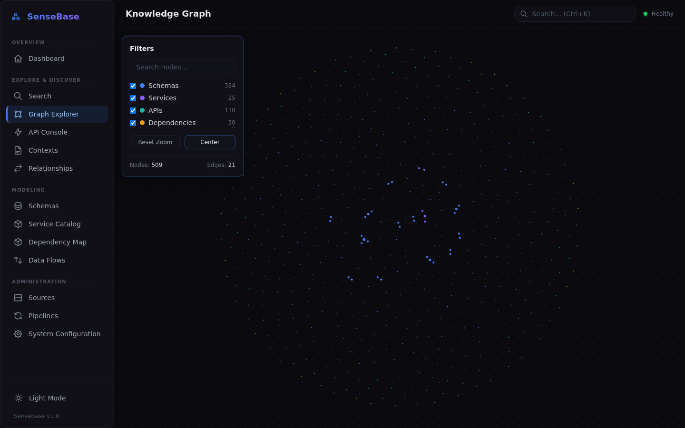
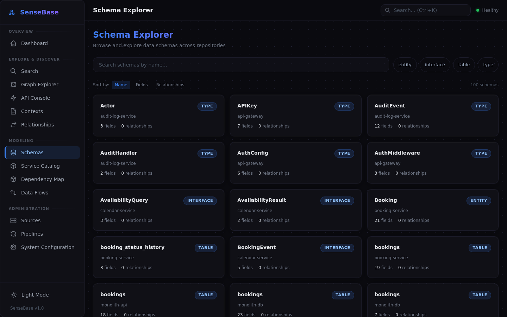
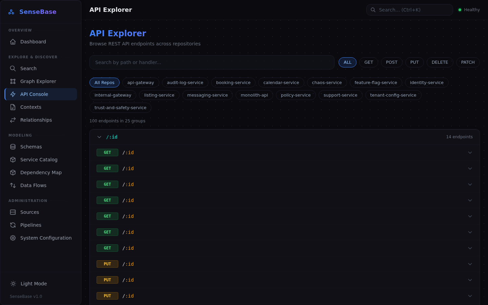
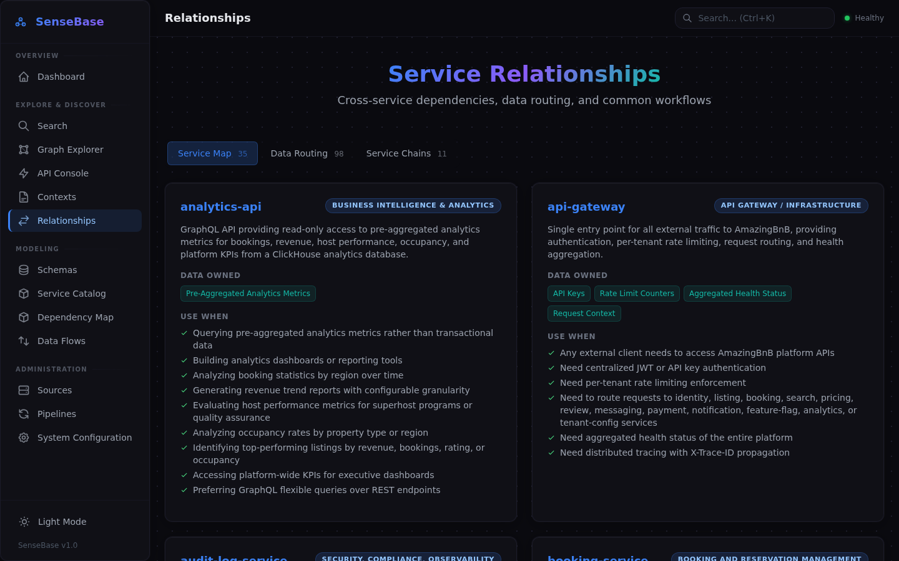
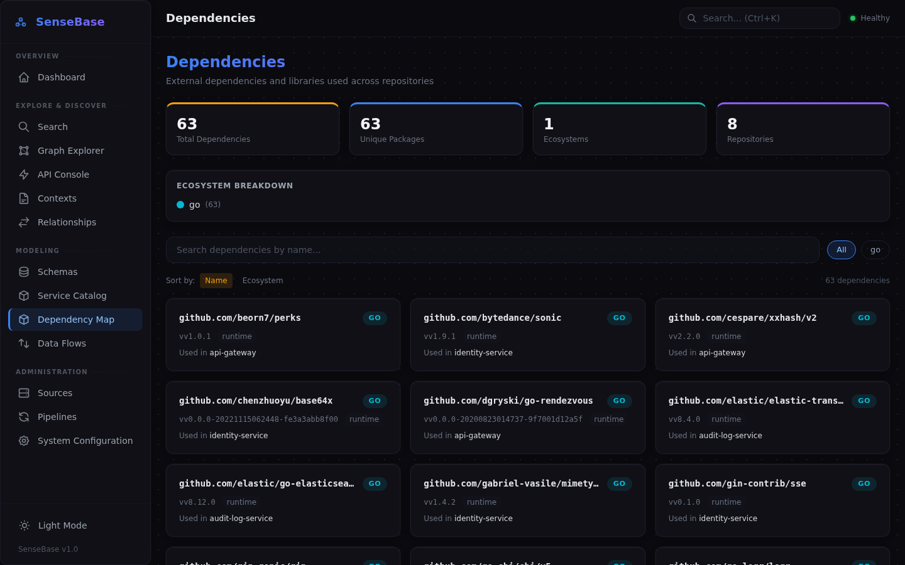
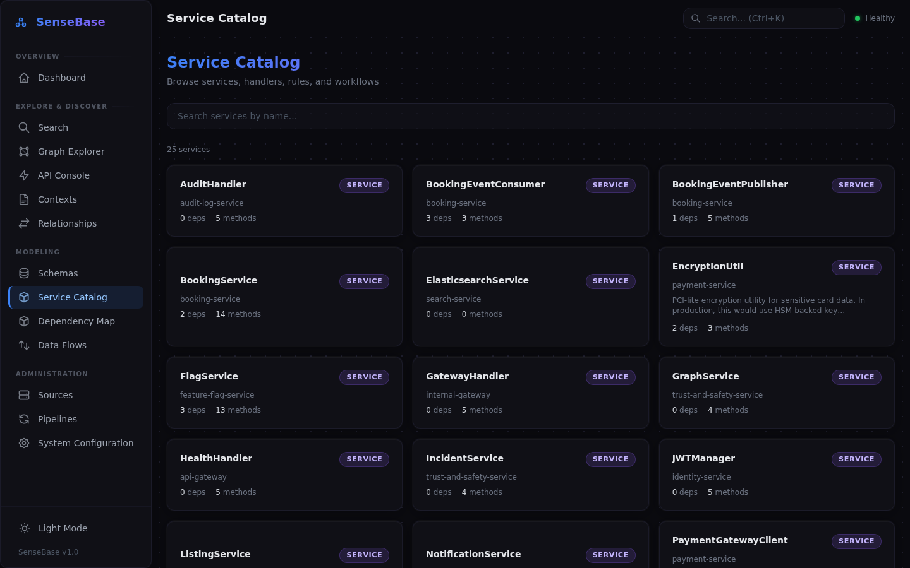
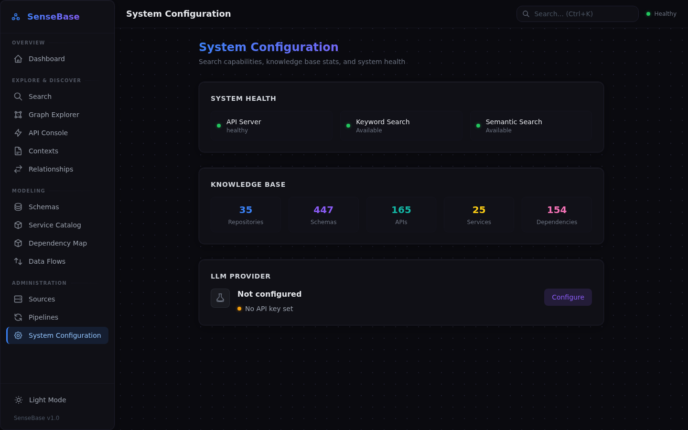
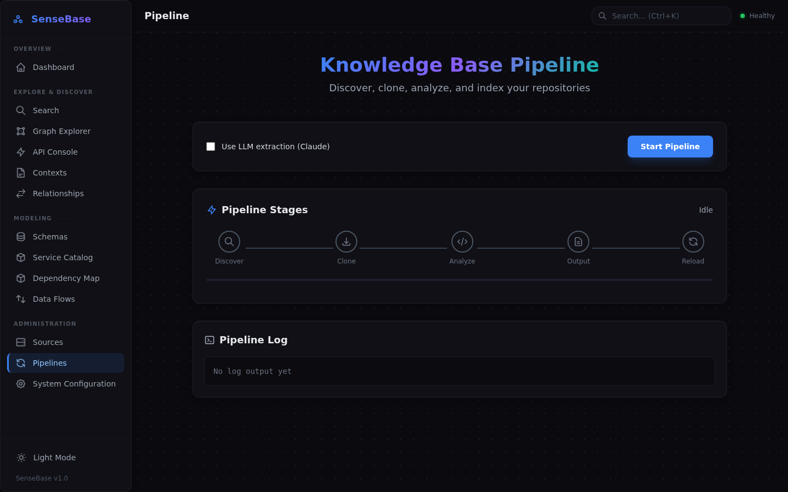

Turn Your Codebase Into
Searchable Knowledge
SenseBase crawls your GitHub, GitLab, or local repositories and extracts schemas, APIs, services, and business context — creating a semantic knowledge base that AI agents and humans can search, explore, and query.
The Problem
Knowledge is scattered across repositories. New developers spend weeks understanding the system. AI tools know your code structure but not what it means for the business.
The Solution
SenseBase extracts structural metadata and enriches it with business semantics — a glossary, entity descriptions, field-level documentation, and query recipes that AI agents can use to autonomously answer questions.
Ontology-Grade Knowledge Store
Four major upgrades inspired by Palantir Ontology best practices
Graph-Queryable Store
The knowledge base is now backed by a full graph with bidirectional adjacency lists, BFS traversal, path finding, and type/name/repo indexes — replacing flat dict-of-lists.
First-Class Link Types
Relationships are promoted to first-class entities with cardinality (one-to-one, one-to-many, many-to-many), properties, descriptions, and automatic bidirectional inverse navigation.
Interface Polymorphism
Schemas sharing common field signatures across repositories are automatically grouped under inferred interfaces (Auditable, Timestamped, SoftDeletable, etc.) for cross-repo type polymorphism.
Entity Lifecycle Status
Every schema, API, service, and dependency carries a lifecycle status — active, deprecated, experimental, or draft — so consumers know what's safe to depend on.
Impact Analysis
Ask "what breaks if I change User?" and get a transitive dependency graph: downstream schemas, services, APIs, and data flows — all via BFS traversal of the ontology graph.
Backward Compatible
v0.2.0 reads existing v1 knowledge base files and rebuilds the graph automatically. No migration needed — just upgrade and re-analyze.
From Code to Knowledge in Minutes
A pipeline that transforms scattered code into structured, queryable intelligence
Connect Your Repos
Point SenseBase at GitHub orgs, a GitLab instance, or local directories. It discovers all repositories automatically.
Analyze with AI
Pattern-based extraction (fast, free, deterministic) or LLM-powered analysis (Anthropic, OpenAI, or AWS Bedrock) for deeper business logic understanding. Both cached intelligently.
Enrich with Semantics
An AI-powered semantic layer adds business glossaries, entity descriptions, field documentation, and step-by-step query recipes.
Explore & Query
Browse the web dashboard, search with natural language, or integrate with AI agents via the REST API and semantic search endpoints.
A Complete Knowledge Portal
An interactive web application for exploring your codebase knowledge
Dashboard
Overview stats for repositories, schemas, APIs, services, and dependencies at a glance
Search
Three search modes: keyword, semantic (embedding-based), and question-answering with RAG context
Knowledge Graph
Interactive force-directed graph showing how schemas, services, APIs, and dependencies connect
Schema Explorer
Browse schemas with fields, relationships, business descriptions, and query recipes
Service Catalog
Services with methods, dependencies, and data access patterns across repositories
API Explorer
Browse REST endpoints by path, method, handler, and repository
Dependencies
Track external packages across repos with ecosystem grouping and usage analysis
Data Flows
Visualize how data moves between services and schemas in your system
Service Contexts
AI-generated business context per repository: purpose, domain, data ownership
Link Types
First-class bidirectional relationships with cardinality, properties, and inverse navigation
Interfaces
Cross-repo type polymorphism: schemas sharing field signatures grouped under inferred interfaces
Impact Analysis
Transitive dependency queries: see what breaks downstream when you change any entity
Pipeline Manager
Trigger crawl jobs from the browser with real-time streaming progress
Configuration
Manage repository sources and LLM provider settings (Anthropic, OpenAI, AWS Bedrock) from the web interface
See It In Action









Dashboard -- at-a-glance stats, system health, and repository overview
Everything You Need
Comprehensive code intelligence for modern engineering teams
Semantic Business Layer
AI generates business glossaries, entity descriptions, field-level docs, and step-by-step query recipes that tell agents how to answer business questions.
LLM-Powered Extraction
Choose from Anthropic, OpenAI, or AWS Bedrock. LLM extraction understands business context, not just syntax — generating repository context with purpose, domain, data ownership, and usage guidance.
Language Agnostic
Java, Python, Go, JavaScript, TypeScript, SQL, Protobuf, GraphQL — dedicated analyzers for each, plus LLM extraction for any language.
Three Search Modes
Keyword search for exact matches, semantic search with vector embeddings, and question-answering with RAG context and query recipe injection.
Knowledge Graph
Interactive force-directed graph visualizing relationships between schemas, services, APIs, and dependencies. Click to explore, zoom to focus.
Relationship Discovery
Automatically maps service dependency graphs, schema foreign keys, data ownership chains, and cross-repository integrations.
Full REST API
50+ endpoints for schemas, services, APIs, dependencies, search, semantic queries, glossary, recipes — ready for AI agent integration.
Multi-Platform Sources
GitHub organizations, self-hosted GitLab, or local directories. Mix and match, configure from the web UI or YAML.
Smart Caching
LLM results cached by content hash. Changed files get re-analyzed; unchanged files are instant. Semantic enrichment cached per repo.
Graph Traversal
BFS-powered queries across the ontology graph: find paths between entities, traverse by edge type and depth, and run impact analysis on any node.
Entity Lifecycle
Every entity carries a status — active, deprecated, experimental, or draft — so AI agents and developers know what's production-ready and what to avoid.
Private & Secure
Runs on your infrastructure. Your code never leaves your network except for optional LLM calls to your chosen provider (Anthropic, OpenAI, or AWS Bedrock).
sensebase --full --llm
# Ask a business question
curl "http://localhost:8000/ask?q=how+do+bookings+get+created"
# Get the business glossary
curl "http://localhost:8000/semantic/glossary"
# Find query recipes for a topic
curl "http://localhost:8000/semantic/recipes?q=booking"
# Semantic search with natural language
curl "http://localhost:8000/semantic/search?q=payment+processing"
# Schema detail with business context
curl "http://localhost:8000/schemas/Booking"
# Impact analysis: what depends on User?
curl "http://localhost:8000/graph/impact?entity=User&depth=3"
# Browse link types and interfaces
curl "http://localhost:8000/link-types"
Why Teams Use SenseBase
Real impact on developer productivity and AI effectiveness
AI Agents That Understand Your Business
Query recipes give AI step-by-step instructions: "To find top-booked properties, call GET /api/v1/bookings with date filters, group by listing_id." No more hallucinated API paths.
Faster Onboarding
New developers search "how does payment work?" and get business context, schemas, APIs, and service relationships instantly.
Find Anything Fast
Three search modes cover every use case: exact keyword matching, semantic similarity for natural language, and Q&A with contextual answers.
System Visibility
The knowledge graph and relationship views show how services connect, which schemas are shared, and how data flows through your architecture.
Always Up to Date
Re-run the pipeline or trigger a crawl from the web UI. Content-hash caching makes incremental updates fast and cheap.
Business Context, Not Just Code
LLM extraction understands that a Booking represents a confirmed guest reservation, not just "a table with 18 columns."
Built With Modern Tools
A focused stack for reliability and performance
Python
Core runtime
FastAPI
REST API & SSE
Multi-LLM
Anthropic, OpenAI, Bedrock
ChromaDB
Vector storage
Sentence Transformers
Embeddings
Vue 3
Web dashboard
D3.js
Knowledge graph
Tailwind CSS
UI styling
Ready to Understand Your Codebase?
Run the interactive setup, point at your repos, and start exploring in minutes.
./setup.sh
sensebase --full --llm
sb-api --port 8000